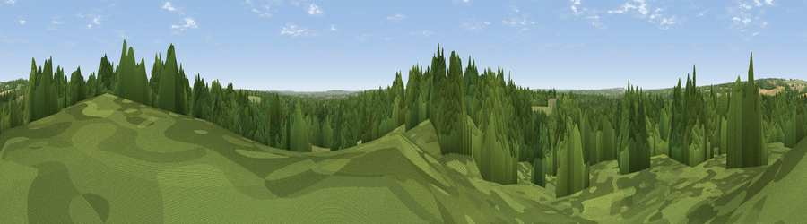

Hawker's Fir Hill
#35902 in England · top 53% of its area beats it · near AmpfieldThe view, rendered

A 360° render of this exact spot computed from the terrain model, tree cover and land cover — summer colours, afternoon light, calibrated against photographs of famous viewpoints. Real trees, hedges and buildings will differ in detail.
The panorama
Grey silhouette: terrain skyline in each direction (720 bearings, Earth curvature and refraction included). Dashed green: skyline with trees (+15 m) and buildings (+8 m) as obstacles. Blue strip: how far the ground is visible on each bearing.
Where the view opens
Wedge length = distance to the farthest visible ground on that bearing (vegetation-aware). Rings at 10, 25 and 50 km.
What fills the view
75% woodland · 16% grassland · 7% cropland · 1% built-up
Angular shares of the visible panorama (visual magnitude), not map area. Landscape diversity 0.33 (0–1 Shannon).
Key numbers
More beautiful places nearby
The staircase of upgrades: each row has a higher view potential than everything closer. Driving times are estimates from straight-line distance, calibrated against real road routing — check an actual route before setting out.
| Place | Direction | Drive | Score |
|---|---|---|---|
| Ladwell | E · 2 km | ~6 min | 38.1 |
| Broom Hill | NW · 3 km | ~7 min | 40.6 |
| Violet Hill | N · 3 km | ~8 min | 55.7 |
| Viewpoint near Sparsholt | N · 5 km | ~11 min | 66.9 |
| Beacon Hill | E · 20 km | ~33 min | 71.7 |
| Viewpoint near Meonstoke | E · 24 km | ~39 min | 74.8 |
| Viewpoint near Southwick | SE · 29 km | ~46 min | 76.6 |
| Viewpoint near Buriton | E · 31 km | ~49 min | 80.0 |
51.01509, -1.42085 · source: osm peak · position refined by local search. Computed location — check access rights before visiting.